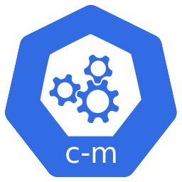

ConfigMap
MYSQL_ROOT_PASSWORD: 123456789"] Pod["
Pod"] subgraph C["3 cách truyền vào"] E["Biến môi trường"] A["Command-line arg"] F["File trong volume"] end CM --> Pod Pod --> E Pod --> A Pod --> F
ConfigMap là một đối tượng API dùng để lưu trữ các cấu hình không nhạy cảm dưới dạng key-value. Nó giúp tách cấu hình ra khỏi code và container, khiến ứng dụng dễ cấu hình và dễ di chuyển giữa các môi trường mà không phải sửa image.
name: "Linh", age: "20").
ConfigMap lưu cấu hình và được truyền vào Pod theo 3 cách: như biến môi trường, như đối số dòng lệnh, hoặc mount thành file trong volume (mỗi cặp key:value thành một file).
apiVersion: v1
kind: ConfigMap
metadata:
name: my-configmap
data:
MYSQL_ROOT_PASSWORD: "123456789"
name: "Linh"
age: "20"Đưa ConfigMap vào Pod dưới dạng biến môi trường:
spec:
containers:
- name: mysql
image: mysql
envFrom:
- configMapRef:
name: my-configmapTạo ConfigMap lưu các key:value đơn giản, truyền vào Pod MySQL (NodePort) dưới dạng biến môi trường (envFrom), sau đó kết nối MySQL bằng thông tin trong ConfigMap.
Deployment dùng envFrom.configMapRef để nạp toàn bộ key:value của ConfigMap thành biến môi trường cho container MySQL.
sourcecode/section_13_kubernetes_k8s_basic/configmap/.Tạo file configmap-simple.yaml:
apiVersion: v1
kind: ConfigMap
metadata:
name: my-configmap
data:
MYSQL_ROOT_PASSWORD: "123456789"
name: "Linh"
age: "20"
---
# ... (PersistentVolume + PVC + Service NodePort giống phần thực hành Persistent Volume)
---
apiVersion: apps/v1
kind: Deployment
metadata:
name: mysql-deployment
spec:
replicas: 1
selector:
matchLabels:
app: mysql
template:
metadata:
labels:
app: mysql
spec:
containers:
- name: mysql
image: mysql
envFrom:
- configMapRef:
name: my-configmap
ports:
- containerPort: 3306
volumeMounts:
- name: mysql-persistent-storage
mountPath: /var/lib/mysql
volumes:
- name: mysql-persistent-storage
persistentVolumeClaim:
claimName: my-pvc💡 envFrom.configMapRef nạp toàn bộ key của ConfigMap thành biến môi trường, trong đó MYSQL_ROOT_PASSWORD sẽ được image MySQL tự động dùng làm mật khẩu root.
kubectl apply -f configmap-simple.yaml
kubectl get configmap my-configmap -o yaml
kubectl get podsXem nội dung Pod để xác nhận env đã được nạp:
kubectl get pods mysql-deployment-<xxxx> -o yaml(thay <xxxx> bằng đuôi Pod thực tế)
minikube service mysql-service --url
http://127.0.0.1:<port>Mở MySQL Workbench, kết nối với password 123456789 (giá trị trong ConfigMap) để xác nhận thành công.
kubectl delete -f configmap-simple.yamlkubectl get configmap my-configmap -o yaml hiển thị 3 key:value.123456789 từ ConfigMap.MYSQL_ROOT_PASSWORD hoặc Pod chưa nạp env.data trong ConfigMap và envFrom trong Deployment.kubectl get configmap my-configmap -o yaml.